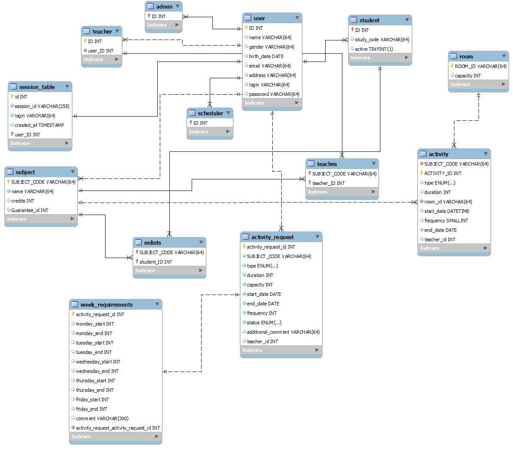

Název zadání (editujte)
- Autoři
- Peter Kováč
xkovac66@stud.fit.vutbr.cz -
Backend, 1/2 frontend
- Matúš Gazdík
xgazdi04@stud.fit.vutbr.cz -
Databáza, 1/2 frontend
- URL aplikace
- Scheduler
Uživatelé systému pro testování
Uveďte prosím existující zástupce všech rolí uživatelů.
| Login |
Heslo |
Role |
| admin |
admin |
Administrátor |
| teacher |
teacher |
Učíteľ |
| student |
student |
Študent |
| scheduler |
scheduler |
Rozvrhár |
Video
Odkaz na video
Přiložte odkaz na komentované video demostrující použití informačního systému. Zaměřte se na případy užití
definované zadáním (např. registrace uživatele, správa uživatelů a činnosti jednotlivých rolí). Video nahrajte
například na VUT Google Drive, kde ho bude možné přímo spustit z odkazu.
Implementace
Stručná dokumentace k implementaci, která popisuje, které části projektu (např. PHP skripty) implementují
jednotlivé případy použití.
Backend je riešený pomocou Frameworku express.js. Je použitý návrhový vzor MVC.
V adresári routes sú definovené cesty, ktoré posúvajú požiadavky klienta na adekvátne controllery.
Napr.
userRoutes.js -> userController.js -> userService.js.
serviceRoutes.js -> serviceController.js -> serviceService.js.
roomRoutes.js -> roomController.js -> roomService.js.
activityRoutes.js -> activityController.js -> activityService.js.
Pri cestách je taktiež podľa potreby implementovaný middleware, ktorý kontroluje prítomnosť sessionId v cookie, alebo rolu uživateľa. To znamená, že predtým, ako je požiadavka posunutá na kontrolér, musí prejsť všetkými middlewarmi
Frontend je implementovaný pomocou React.js.

Inštalácia
Softwareove požiadavky
- node v20.2.0
- npm v9.6.6
- mariadb Ver 15.1 Distrib 10.5.21/mysql Ver 8.0.31
Backend
-
Rozbalit archív xgazdi04_xkovac66.zip
-
V adresári backend spustiť príkaz npm install
-
Príkazom node . spustiť server
Frontend
-
V adresári client spustiť príkaz npm install
-
npm run build
-
serve -s build -l tcp://0.0.0.0:3000
Databáza
-
Vytvoriť databázu xkovac66.
-
mysql -u xkovac66 -p xkovac66 < export.sql
-
Admina je možné vytvoriť len priamo cez príkazový riadok. Následne admin vytvára ostatných uživateľov cez
rozhranie aplikácie.
v backend/config/db.js treba nastaviť pripojenie na databázu
port, na ktorom bezi server je mozne nakonfigurovat v backend/index.js
v client/src/config.js treba nastaviť konštantu HOST na ip adresu backendového servera
Známé problémy
Nie je možné vytvárať osobné požiadavky na rozvrh individuálne pre učiteľa. Časové požiadavky vytvára garant
predmetu a následne ich posiela rozvrhárovi, ktorý
ich môže schváliť alebo zamietnuť a následne podľa nich vytvára aktivitu.